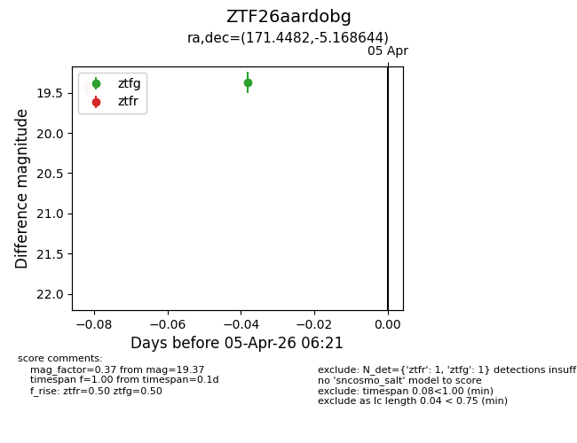
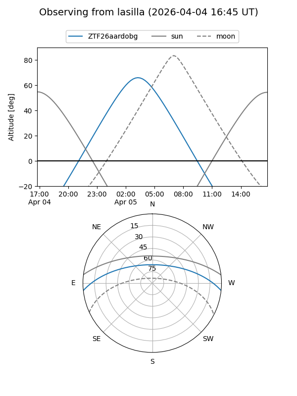
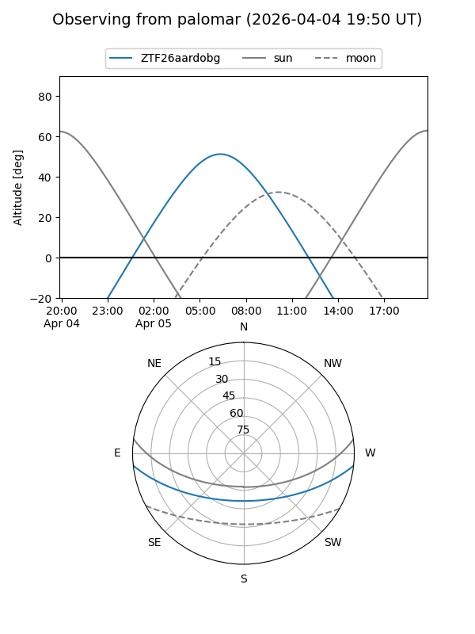

ZTF26aardobg
Target ZTF26aardobg at 2026-04-05 06:24
Aliases and brokers:
FINK: link
Lasair: link
ALeRCE: link
alt names
ZTF26aardobg (ztf,fink_ztf)
Coordinates:
equatorial (ra, dec) = 171.4482,-5.16864
equatorial (HMS+DMS) = 11:25:47.56,-05:10:07.12
galactic (l, b) = (267.0700,+51.63908)
Flags:
Photometry:
last ztfg=19.37, ztfr=19.42
1 ztfg, 1 ztfr detections
Lightcurve

Visibility


Additional plots